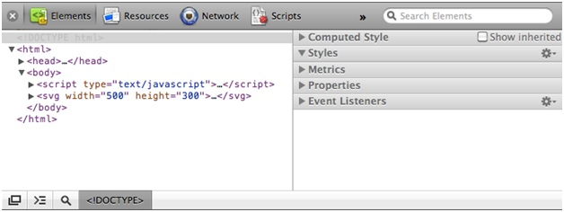

Язык гипертекстовой разметки используется для структурирования содержимого для веб-браузеров. Простейшая HTML-страница выглядит примерно так:
<html> <head> <title>Page Title</title> </head> <body> <h1>Page Title</h1> <p>This is a really interesting paragraph.</p> </body> </html>
Объектная модель документа относится к иерархической структуре HTML. Каждый тег, заключенный в квадратные скобки <>, называется элементом, и мы обращаемся к отношениям, существующим относительно элементов друг к другу в человеческом плане: родитель, ребенок, брат/сестра, предок и потомок. В коде HTML, расположенном выше, элемент является родительским для двух своих потомков: h1 и p(которые приходятся братьями друг другу). Все элементы, расположенные на странице, являются потомками элемента html.
Веб-браузеры разбирают DOM для того, чтобы сверстать страницу c содержимым.
Каскадные таблицы стилей используются для стилизации отображения HTML-страниц. Простая CSS таблица стилей выглядит похожей на приведенный ниже пример:
body {
background-color: white;
color: black;
}
Стили CSS состоят из селекторов и правил. Селекторы определяют набор элементов, к которым будут применены описанные стили:
h1 /* Selects level 1 headings */ p /* Selects paragraphs */ .caption /* Selects elements with class "caption" */ #subnav /* Selects element with ID "subnav" */
Правила - это свойства, которые в совокупности формируют стили:
color: pink; background-color: yellow; margin: 10px; padding: 25px;
Мы объединяем селекторы и правила, используя фигурные скобки:
p {
font-size: 12px;
line-height: 14px;
color: black;
}
D3 использует селекторы CSS для определения элементов, с которыми будет происходить дальнейшая работа. Поэтому необходимо понимать, как их использовать.
Правила CSS могут быть включены непосредственно в элемент head страницы, например:
<head>
<style type="text/css">
p {
font-family: sans-serif;
color: lime;
}
</style>
</head>
или сохранены во внешний файл с расширением .css, а потом подключены к странице в элементе head:
<head>
<link rel="stylesheet" href="style.css">
</head>
JavaScript является динамическим языком сценариев, который может заставлять браузер делать изменения на странице, когда она уже загружена. Сценарии могут быть помещены напрямую в HTML-страницу между тегами script. Например:
<body>
<script type="text/javascript">
alert("Hello, world!");
</script>
</body>
или храниться в отдельном файле, а потом подключены к страницу к каком-нибудь ее месте(чаще всего это происходит внутри тега head):
<head>
<title>Page Title</title>
<script type="text/javascript" src="myscript.js"></script>
</head>
Надо быть знакомым с инструментами разработчика браузера, которым вы пользуетесь. В браузере на основе движка WebKit(например, Safari или Chrome), можно открыть веб-инспектор, который выглядит подобно картинке снизу:
В то время как "View Source" показывает вам исходный код HTML-страницы, веб-инспектор показывает вам текущее состояние DOM. Это очень полезно, потому что ваш код будет динамически изменять DOM элементы. В веб-инспекторе можно видеть, как меняются элементы. Так же вы будете пользоваться JavaScript-консолью для отладки.
D3 лучше всех, когда отрисовывает образы с использованием масштабируемой векторной графики. SVG - это формат изображений, который задается текстовым описанием. Это означает, что можно указать, как SVG изображение должно выглядеть путем написания кода простым языком разметки, наподобие HTML. В сущности, SVG-код может быть включен напрямую в HTML-код страницы.
Веб-браузеры поддерживают формат SVG в течении многих лет(за исключением Internet Explorer), но он до сих пор не совсем прижился.
Небольшой круг можно нарисовать, используя следующий код:
<svg width="50" height="50">
<circle cx="25" cy="25" r="22" fill="blue" stroke="gray" stroke-width="2"/>
</svg>
Идем далее. Если нажать на круг правой кнопкой мыши, то мы не увидим привычной надписи "Сохранить изображение", ведь это не изображение! Увеличьте масштаб в вашем браузере, и вы увидите, круг увеличивается, а размытость круга уменьшается - эффект, присущий векторной графике.
Вы не обязаны использовать SVG в D3, но вскоре вы увидите, что SVG предоставляет спектр визуальных возможностей, который нельзя воспроизвести, используя обычные HTML-элементы.